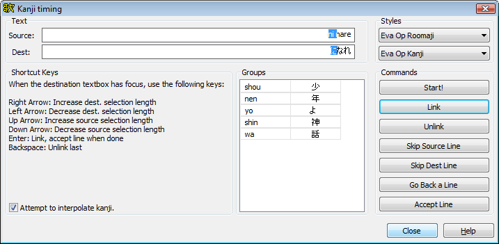

The kanji timer makes it easy to copy timed karaoke from one set of already karaoke timed lines to another set of yet untimed lines. Primarily intended for adding karaoke to Japanese songs.
Here is a video demonstration of the kanji timer in action: Download demonstration video (XviD MP3 AVI, 5 min 20 sec, 12 MB)
The kanji timer attempts to pair syllables in one (timed) input line with a given style with syllables in a corresponding (untimed) line with another style. In other words, the timed input lines should all have same style ("romaji" for example) and the untimed ones another ("kanji" for example). Having more timed source lines than untimed destination ones or vice versa can confuse the tool, but it's usually possible to un-confuse it, see below. In order to correctly pair source lines with destination ones, both sets must be in the same order in the grid. For example, this works:
Timed line 1 Untimed line 1 Timed line 2 Untimed line 2
And so does this:
Timed line 1 Timed line 2 Untimed line 1 Untimed line 2
But this does not (pairs lines wrong):
Timed line 1 Timed line 2 Untimed line 2 Untimed line 1
The kanji timer dialog looks like this:

The first thing you need to do is to select which styles are used for the timed input lines and the untimed output lines respectively. This is done in the upper right corner of the dialog; the top dropdown is the source style and the bottom one is the destination. When you've done this, click the start button.
Now, you'll see the first syllable of the first source line highlighted in the source text field, and a suggestion for the destination syllable highlighted in the destination field. What you do now is "group" each source syllable with one or more kanji (or other syllables) in the destination. This is done using the following keyboard shortcuts: